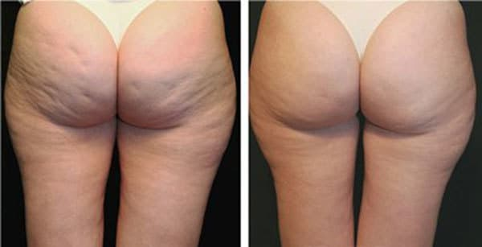
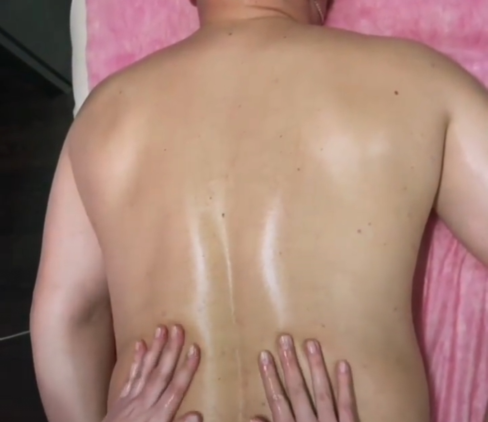
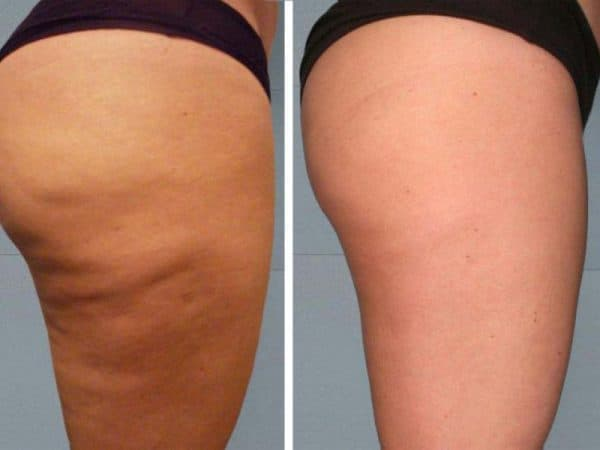

Антицелюлітний масаж має як плюси, так і мінуси
Плюси
-
Зменшення видимості целюліту. Антицелюлітний масаж може допомогти зменшити видимість
целюліту, зокрема, за рахунок поліпшення кровообігу та зменшення набряклості.
-
Покращення стану шкіри. Масаж сприяє покращенню стану шкіри, зокрема, за рахунок
розслаблення м'язів та зменшення запалення.
-
Покращення тонусу м'язів. Антицелюлітний масаж може допомогти підтримати тонус м'язів та
зміцнити їх.
-
Зменшення болю. Масаж може допомогти зменшити болісні відчуття, пов'язані з целюлітом, за
рахунок зменшення запалення та затвердіння в тканинах.
Мінуси
- Висока вартість. Антицелюлітний масаж може бути досить дорогою процедурою, особливо якщо
проводити його регулярно.
-
Можливість побічних ефектів. Масаж може супроводжуватись побічними ефектами, такими як біль
у м'язах, почервоніння та набряклість.
-
Необхідність проведення курсу. Антицелюлітний масаж може бути ефективним лише при
регулярному проведенні, тому для досягнення бажаного результату може знадобитись проведення
повного курсу масажу.
-
Обмежена ефективність. Антицелюлітний масаж може бути менш ефективним для більш виражених
ступенів целюліту, тому може знадобитись поєднання з іншими методами лікування.
Результат такий самий як у дорогих масажів. Відмінний результат за маленькі гроші.

Антицелюлітний масаж техніка
Основні техніки антицелюлітного масажу включають в себе:
-
Глибоке м'язове розслаблення: м'язова робота впливає на зовнішній вигляд шкіри і може
зробити її більш збалансованою. Використовую різні методики, щоб допомогти розслабитися
м'язам, такі як розминання, тиск, м'язовий розмин.
-
Круживі рухи: ця техніка полягає в тому, щоб робити кругові рухи, наносячи легкий тиск на
проблемні зони. Це допомагає покращити кровообіг і розгладити дефекти.
-
Підтягування: ця техніка включає в себе підтягування шкіри вгору. Це допомагає покращити
тонус шкіри
-
Легкий тиск: це включає в себе легкий тиск на проблемні зони. Це може підвищити кровообіг і
допомогти зменшити набряклість і вигляд целюліту.
-
Кнетення: ця техніка включає в себе надавання м'язам підтримки і сприяння розслабленню.
Кнетення також допомагає відновити еластичність шкіри
Один курс — 10–12 процедур, які варто виконувати через день

Антицелюлітний масаж види та ефективність
Антицелюлітний масаж - це процедура, яка може допомогти зменшити вигляд целюліту, покращити
кровообіг і тонус шкіри. Існують різні види антицелюлітного масажу, які можуть відрізнятися за
технікою і
-
Класичний масаж - виконується за допомогою кругових рухів і легкого тиску на проблемні зони.
Він може допомогти покращити кровообіг і розслабити м'язи.
-
Вакуумний масаж - використовується спеціальний апарат з вакуумними насадками, щоб створити
тиск на шкіру. Це може допомогти зняти набряклість і зменшити вигляд целюліту.
-
Лімфодренажний масаж - спрямований на стимулювання лімфатичної системи для виведення
токсинів з організму. Це може допомогти зняти набряклість і зменшити вигляд целюліту.
-
Роликовий масаж - виконується за допомогою спеціальних роликів, які наносять тиск на шкіру.
Це може допомогти розгладити дефекти і зменшити вигляд целюліту.
-
Міофасціальний масаж - використовується для зняття напруги з м'язів і фасції (сполучної
тканини). Це може допомогти покращити тонус шкіри і зменшити вигляд целюліту.
-
Антицелюлітний масаж з ефірними оліями - виконується за допомогою спеціальних олій з
антицелюлітними властивостями. Це може допомогти покращити ефективність масажу і зменшити
вигляд целюліту.
Ефективність антицелюлітного масажу залежить від багатьох факторів, таких як ступінь вираженості
целюліту, вік, стать, здоров'я та індивідуальні особливості клієнта, а також від
використовуваної техніки масажу
Мій кабінет масажу пропонує курс антицелюлітного масажу за
доступними цінами
